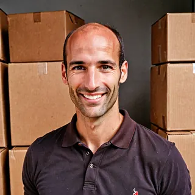
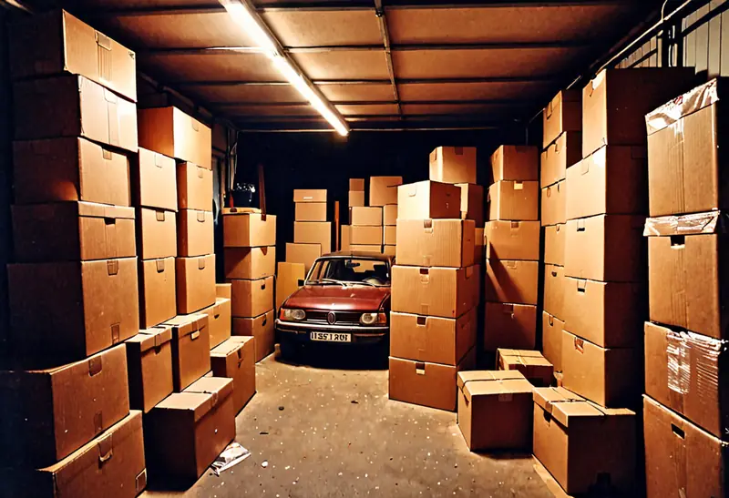

Une Perle m’a demandé combien gagne un Diamant Royal. Je lui ai répondu : pose plutôt la question à ton cœur.
♥ 3 318Elles et ils rayonnent
Le Siège et quelques-unes de nos lignées, et ce qu’ils partagent publiquement. Ici, partager est une seconde nature.
Marie-Ange · Régis · Jonathan · Bérengère · Océane · Christelle · Sandrine · Didier
Marie-Ange Sauvaire
Fondatrice et Première Source
Diamant Royal · marie-ange.diamant-royal@source-et-eclat.example
Ancienne vendeuse de cuisines. Écrit le Message de la Semaine le dimanche soir et l’envoie le lundi à 7 h à ses trois Double Diamant.
Message de la Semaine en cours d’écriture. Il n’y aura qu’un lien, comme toujours, et il mènera où il doit mener. Demain 7 h, ma belle lumière.
♥ 3 907 · 3 907 commentaires : « Merci la Source »On me demande qui écrit mes messages. Moi, depuis mon téléphone, les pieds dans le sable. Si vous y voyez une faute, c’est la Source qui a tremblé.
♥ 2 640Régis Sauvaire
Intendant de l’Abondance
Directeur financier · Mari de la Fondatrice
Tient les comptes de la Villa Éclat depuis le port de Saint-Lumin-les-Flots. Valide les commissions au-dessus de 5 000 €.
Au-dessus de 5 000 €, Jonathan m’envoie une photo de son écran. Je réponds OK. Le réseau est bon jusqu’à la digue.
♥ 6Le bateau s’appelle L’Abondance II. On me demande souvent ce qu’est devenu le premier. Il est plus petit, c’est tout.
♥ 4Jonathan Roumégous
Ordonnateur des Flux
Comptable · jonathan.siege@source-et-eclat.example
Verse les commissions le 5 du mois sur le RIB reçu à commissions@source-et-eclat.example. Mène en janvier le passage à Virondine.
Virondine, c’est pour le versement du 5 janvier. Vos 9 170 RIB repassent tous par moi avant. Le message partira par les lignées : répondez-y.
♥ 3Rappel : pour changer de RIB, un mail à commissions@ avant le 1er, avec ton nom, ton rang et le prénom de ta marraine. Je traite dans l’ordre d’arrivée, sans appeler personne : vous êtes 9 170.
♥ 2On m’a proposé le Pack Démarrage à −20 %. J’ai répondu que je tenais les comptes.
♥ 1Bérengère Cazalis
Cheffe de la Conformité Lumineuse
Juridique et presse · presse@source-et-eclat.example
Relit ce que le Siège publie, répond aux journalistes et reçoit les courriers d’avocats.
Rappel : on ne dit pas « revenu », on dit « abondance déclarée ». On ne dit pas « guérit », on dit « accompagne ».
♥ 14Trois mises en demeure cette semaine. Je les ouvre toutes, quel que soit le format, le jour même : un avocat n’attend pas.
♥ 19Océane Trinquier
Chargée de Rayonnement
Réseaux et Mon Arbre · Arrivée en février
Publie chaque passage de rang sur le site et s’occupe des accès à Mon Arbre. Vingt-quatre ans, plus jeune salariée du Siège.
Passage de rang ? Envoie-moi une photo de toi heureuse, tous formats, à oceane.siege@source-et-eclat.example. Je mets ton prénom et ton nouveau rang en ligne dans le quart d’heure.
♥ 2 914Perdu ton mot de passe Mon Arbre ? Écris-moi. Je le remets à « Eclat » suivi de ton année d’arrivée, et tu peux le garder.
♥ 3 460Mon premier selfie à la Villa !
♥ 4 127Christelle Aubanel
Gardienne de la Première Lignée
Double Diamant · Sœur de la Fondatrice
Une des trois premières. Reçoit le Message de la Semaine directement de Marie-Ange et le transfère à ses Diamant.
7 h 02, Message de la Semaine transféré. Je ne les lis plus, je les sens. #Duplication
♥ 1 204Ma sœur m’a recrutée à Noël 2017. Depuis, nous nous écrivons chaque lundi.
♥ 986Sandrine Figuerolles
Saphir · Marraine de 14 belles âmes
Filleule de Fabienne Cabanolles · 06 39 98 41 26
Ancienne assistante dentaire. Accueille ses nouvelles belles âmes par message, de sa voiture, entre deux rendez-vous.
Je viens de passer Saphir ! Ma nouvelle adresse : sandrine.saphir@source-et-eclat.example. Oubliez l’ancienne, sandrine.perle@source-et-eclat.example. #Saphir
♥ 212Ma banque m’a encore fermé un compte, elle ne comprend pas l’abondance. Mes belles âmes, nouveau RIB par message ce soir. 1 490 €, libellé « Joie ».
♥ 187Bureau du jour. Sans patron, sans horaires.
♥ 143
Didier Malbosc
Perle depuis 3 mois
Filleul de Sandrine Figuerolles · didier.perle@source-et-eclat.example · 06 39 98 73 05
Ancien magasinier. Cherche ses premières belles âmes.
Deuxième Pack reçu. La voiture ne sort plus.

♥ 3Message de la Semaine reçu à 11 h 52, transféré à 11 h 53, à ma mère et à Gérard.
♥ 2Première commission reçue ! 11 €. Je réponds à tout, je clique sur tout, je n’ai que ça à faire. Contactez-moi.
♥ 4